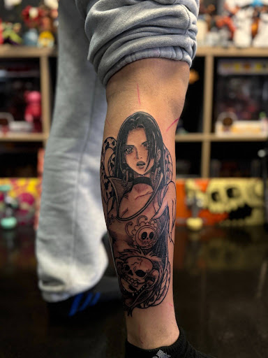
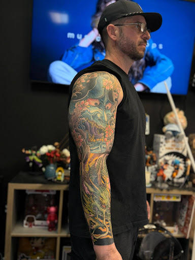
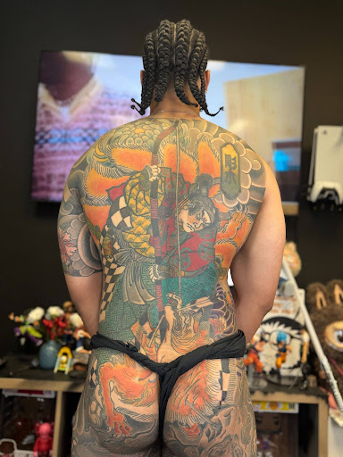
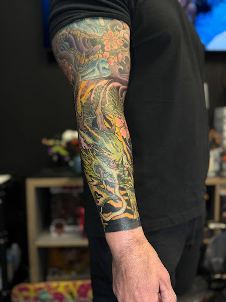
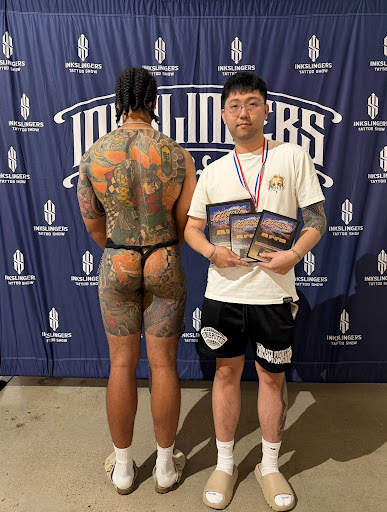
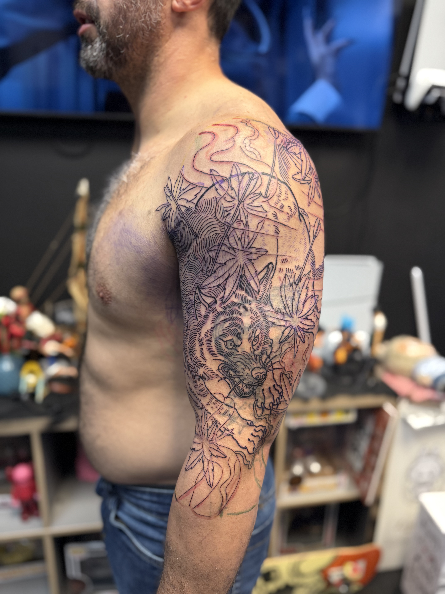
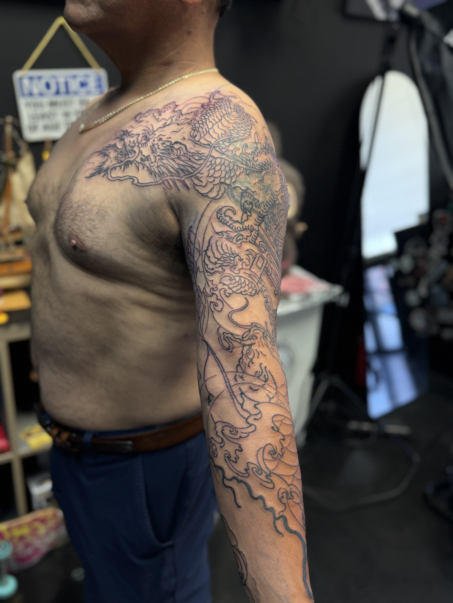
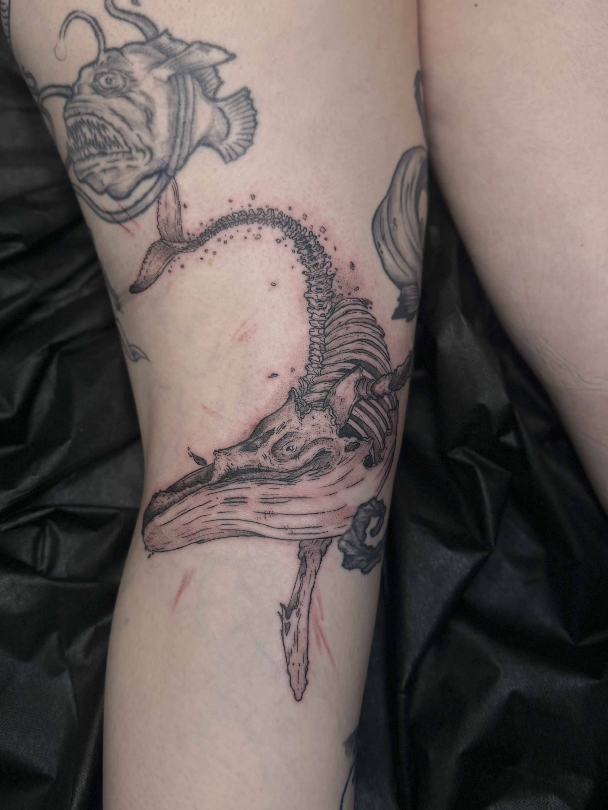

About Zack Yang – Tattoo Artist at Horimu Studio
Specializes in:
Japanese Traditional Tattoos
Other Styles:
- Custom Tattoo Work
Zack Yang is an award-winning tattoo artist at Horimu Studio with over five years of experience specializing in authentic Japanese Traditional tattooing.
His work follows the core principles of traditional Japanese art, focusing on strong composition, symbolism, flow, and timeless design.
Zack creates custom tattoo pieces that respect the history and structure of Japanese Traditional tattoo culture while maintaining clean execution and bold visual impact.
Zack Yang’s Tattoo Work







